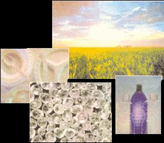

Vegetables have long been regarded as one of nature's greatest gifts. Broccoli fights cancer, carrots sharpen vision, but who could have guessed that corn would prevent head contusions? If Dow Chemical and Cargill Company have anything to say about it, your bicycle helmet will be made with maize.
Cargill Dow Polymers (CDP), a joint venture of Cargill Company and Dow Chemical, has invented a new biodegradable polymer made from corn that may revolutionize the plastic industry.
Using a patented process called NatureWorks, CDP extracts unrefined sugar from corn and, through fermentation, transforms it into lactic acid. Water is then removed from the lactic acid to form lactide, which in turn is refined to produce polylactide polymers (PLA). Commonly known as bioplastic, PLA is biodegradable and can be composted in your backyard along with your table scraps.
"Not only are we using biodegradable components to manufacture plastic, but we can compete with your stan dard oil-based plastics on a cost and performance basis," says John Ohman, marketing executive for CDP.
Already a leader in the production of ethanol, a gasoline additive made from corn, CDP is banking on bioplastics to outpace traditional petro polymers. Sure to help the cause are skyrocketing oil prices, which over the last year have doubled worldwide.
Finally headed for market after ten years on the drawing board, PLA will be produced in a $300 million CDP plant being built in Blaire, Nebraska, and scheduled to open in 2001.
-Eben Carle
|
 With CDP set to make biodegradable plastic out of corn, you'll be able to compost your water bottles along with your kitchen scraps. |
|
|